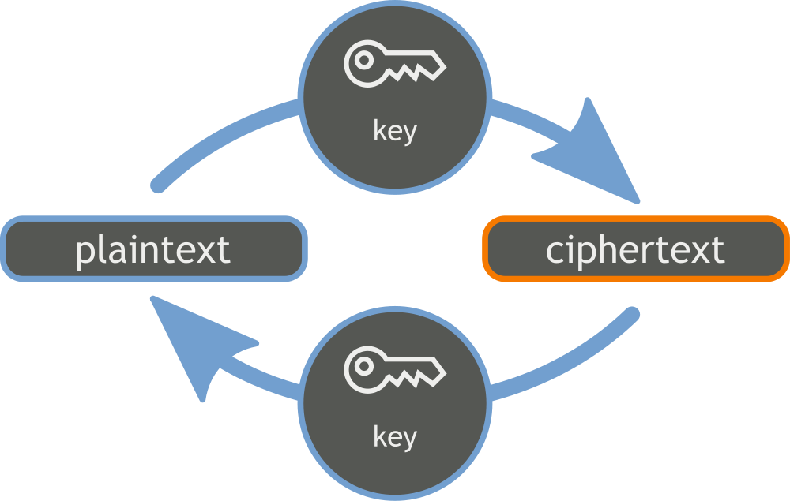
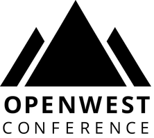
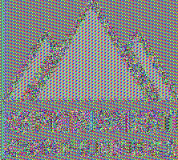
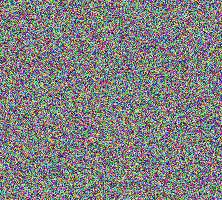
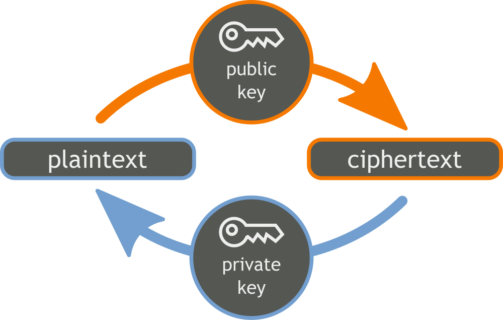
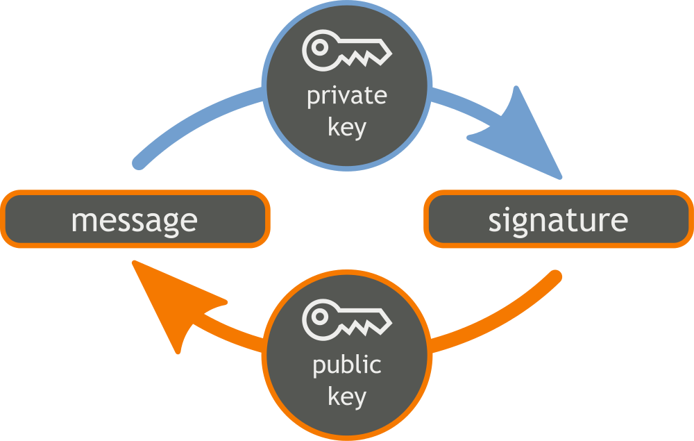
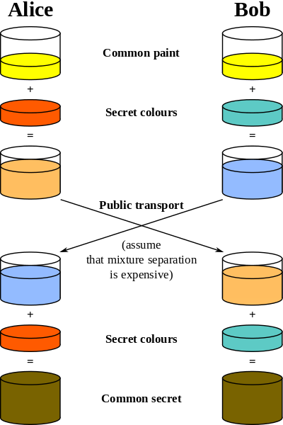

License
This presentation is licensed under the Creative Commons Attribution-ShareAlike
license.
See http://creativecommons.org/licenses/by-sa/3.0/ for more details.
This document is licensed under the CC:BY:SA
Details to the license can be found here:
http://creativecommons.org/licenses/by-sa/3.0/
- The licnese states the following:
- You are free to copy, distribute and tranmit this work.
- You are free to adapt the work.
- Under the following conditions:
- You must attribute the work to the copyright holder.
- If you alter, transform, or build on this work, you may redistribute the
work under the same, similar or compatible license.
- With the understanding that:
Any conditions may be waived if you get written permission from the
copyright holder.
In no way are any of the following rights affected by the license:
- Your fair dealing or fair use rights;
- The author's moral rights;
- Rights other persons may have either in the work itself or
in how the work is used, such as publicity or privacy rights.
For any reuse or distribution, you must make clear to others the license
terms of this work. The best way to do this is with a link to the web
page provided above or below.
The above is a human-readable summary of the license, and is not to be used
as a legal substitute for the actual licnse. Please refer to the formal
legal document provided here:
http://creativecommons.org/licenses/by-sa/3.0/legalcode
Introduction
- Symmetric Encryption
- Asymmetric Encryption
- Encryption & Decryption
- Signatures & Verification
- The Diffie-Hellman Key Exchange
- The SSL Handshake
- SSL 1.0, 2.0, 3.0
- TLS 1.0, 1.1, 1.2
- OpenSSH Concepts
- OpenPGP Concepts
Symmetric Encryption
- Shared key secret
- Rotational ciphers
- Substitution ciphers
- Classical "field/hand" ciphers
- One-time pad
- AES, 3DES, Blowfish
Symmetric Encryption Visually

Block Cipher Modes
- Electronic Code Block (ECB)
- Cipher Block Chaining (CBC)
- Cipher Feedback (CFB)
- Output Feedback (OFB)
- Counter (CTR)
- Counter with CBC (CCM)
- Carter-Wegman + CTR mode (CWC)
- Offset Codebook Mode (OCM)
- Galois/Counter Mode (GCM)
- EAX (Embrace And eXtend?)
ECB Visually
CBC Visually
CFB Visually
OFB Visually
CTR Visually
Problms with ECB Mode
- $ openssl enc -aes-128-ecb -in openwest.bmp -out openwest-ecb.bmp
- $ openssl enc -aes-128-cbc -in openwest.bmp -out openwest-cbc.bmp
- $ dd bs=1 count=54 conv=notrunc if=openwst.bmp of=openwst-ecb.bmp
- $ dd bs=1 count=54 conv=notrunc if=openwst.bmp of=openwst-cbc.bmp
- $ convert openwest.bmp openwest.png
- $ convert openwest-ecb.bmp openwest-ecb.png
- $ convert openwest-cbc.bmp openwest-cbc.png
Problems with ECB Mode Visually
| 
|

|

|
| The original OpenWest logo |
Encrypted using ECB mode |
Modes other than ECB result in
pseudo-randomness |
Asymmetric Encryption
- Private and public keys.
- Public keys distributed.
- RSA, ECC, Diffie-Hellman.
Encryption & Decryption
- Encryption: plaintext -> ciphertext.
- Decryption: ciphertext -> plaintext.
- Encryption requires public key.
- Decrytpion requires private key.
Asymmetric Encryption Visually

Signatures & Verification
- Nonrepudiates data.
- Like a physical signature, but stronger.
- Signing requires the private key.
- Verification requires the public key.
Signatures & Verification Visually

The Diffie-Hellman Key Exchange
- Symmetric key exchange.
- Vulnerable to MITM attack.
- Both parties A & B generate a secret.
- A encrypts a message with his secret.
- A sends ciphertext to B.
- B encrypts the ciphertext with his secret.
- B sends ciphertext to A.
- A decrypts ciphertext.
- A sends to B.
- B decrypts ciphertext- has A message.
Diffie-Hellman KEX Visually

The SSL Handshake
- Client issues "HELLO".
- Server sends public certificate.
- Client authenticates certificate.
- Client generates secret.
- Client encrypts secret with cert.
- Client sends ciphertext to server.
- Server decrypts ciphertext.
- Secret used at symmetric key.
SSL 1.0
- Developed by Netscape in 1993.
- Never actually released.
- No data integrity. Later added CRC.
- RC4 for encryption.
- Vulnerable to replay attacks.
- No RFC documents.
- Broken in 10 minutes during a presentation by Vint Cerf.
SSL 2.0
- Developed by Netscape in 1994.
- First public release.
- RSA and MD5-only.
- 40-bit "export" and 128-bit RC2.
- 40-bit "export" and 128-bit RC4 .
- 64-bit DES.
- 128-bit IDEA.
- 192-bit 3DES.
- CBC mode only.
SSL 2.0 Weaknesses
- Vulnerable to MITM attacks.
- Vulnerable to a cipher suite attack.
- Vulnerable to a truncaction attack.
- Uses weak MAC construction.
- Client handshake cannot be interrupted.
- No certificate chaining.
SSL 3.0
- Released in 1996 due to flaws in 2.0.
- Complete redesign.
- Defined in RFC 6101.
- MD5 asd SHA-1.
- DES, 3DES, and RC4.
- 40-bit export.
- Backward compatible with 2.0.
- Supports cert chaining.
- RSA, Diffie-Hellman, and Fortezza key exchanges.
- Allows for compression & decompression.
- Different cipher specifications.
- CBC mode only.
SSL 3.0 Weaknesses
- RC4 biases.
- CBC not authenticated (padding oracle attacks abound).
- BEAST attack (CBC padding non-deterministic).
- Lucky 13 attack (CBC timing attack).
- POODLE attack (MITM attack forcing SSL 3.0 downgrade).
TLS 1.0
- Released in 1999 as an upgrade to SSL 3.0.
- TLS 1.0 is NOT SSL 3.0.
- Defined in RFC 2246.
- Same cipher suite as SSL 3.0.
- Added ephemeral Diffie-Hellman (authenticated with DSA or RSA).
- Authenticated CBC.
TLS 1.0 Weaknesses
- Hashing algorithms MD5 and SHA-1.
- No known pseudorandom function weaknesses.
- Ciphers RC2, RC4, and DES.
- Supports 40-bit "export" mode.
- Support anonymous ciphers (MITM attack).
TLS 1.1
- Released in April 2006.
- Defined in RFC 4346.
- Dropped RC2 support.
- MD5, SHA-1, and SHA-256.
- AES, DES, 3DES, and RC4.
- DHE with DSA or RSA.
- Authenticated CBC.
- Explicit Initialization Vector (vs. implicit IV).
- Change in handling of padding errors.
- Support for IANA registration of parameters.
TLS 1.1 Weaknesses
- No real flaw found in TLS 1.1.
- MD5 and SHA-1 support.
- DES and RC4 support.
- No known pseudorandom function weaknesses.
- No authenticated encryption modes (improved performance).
TLS 1.2
- Released in August 2008
- Defined in RFC 5246.
- Dropped RC4, IDEA and DES cipher support.
- Dropped 40-bit "export" mode.
- PRF MD5-SHA1 combination replaced by SHA-256.
- MD5 support only on RSA certificate signatures.
- Mandated support for AES.
- Agreement on hash and ciphers between server and client.
- Authenticated encryption with associated data (AEAD) GCM and CCM added.
- Never negotiate SSL 2.0
TLS 1.3 (draft)
- All further TLS version refined in RFC 6176.
- Dropped compression support (CRIME, BREACH, etc).
- Dropped renegotiation support (new params, new keys, etc).
- Dropped non-AEAD ciphers (no CBC).
- Dropped RSA and anonymous DH KEX.
- Dropped backwards compatibility support for SSL or RC4.
OpenSSH History
- Created by the OpenBSD as an alternative to SSH by Tatu Ylönen.
- Forked from OSSH, which itself was a fork of Ylönen's original SSH 1.2.12 release.
- First appeared in OpenBSD 2.6.
- First portable release in October 1999.
- Developers threatened by Tatu Ylönen for trademark violation in 2001.
- Defined in RFCs 4250-4256, 4335, 4344, 4345, 4419, 4432, 4462, 4716, 4819, 5647, 5656, 6187, 6239, 6594, & 6668.
OpenSSH Concepts
- OpenSSH 6.8 released March 18, 2015.
- 3DES, AES, Blowfish, CAST128, "arcfour", ChaCha20 Ciphers.
- SHA-1, SHA-256, SHA-512, MD5, RIPEMD160 MACS.
- DH, DH group, ECDH NIST "p-curves", Curve25519 KEX.
- CBC and arcfour disabled by default.
- Supports building against LibreSSL.
- Supports Kerberos tickets.
- Supports password and key-based authentication.
- Provides SSH, secure FTP, and secure copy.
- Supports tunneling.
- Supports X11 forwarding.
Conclusion
- Questions?
- Comments?
- Rude Remarks?